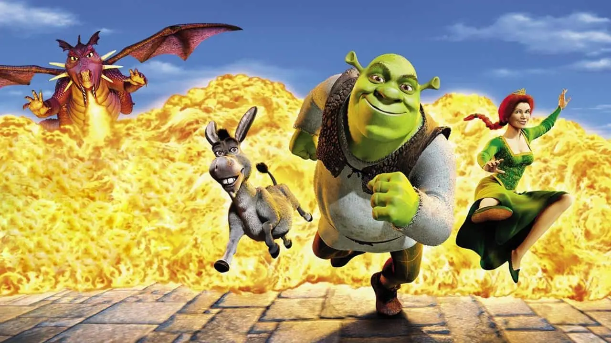
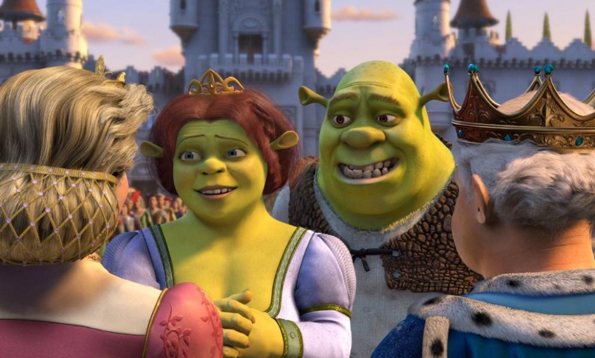

Shrek
La primera película de la saga se impone con holgura como la mejor de todas. La historia parte con un grupo de personajes de fantasía, como Pinocho, los Tres Cerditos y el Lobo Feroz, que ocupan el pantano del ogro Shrek, después de haber sido expulsados de las tierras de Lord Farquaad. La única manera que tiene para recuperar su tranquilidad es rescatar desde la torre del dragón a la princesa Fiona, quien oculta un secreto que termina acercándola a Shrek.
Shrek 3
Con justa razón, la tercera entrega obtiene las calificaciones más bajas. En una historia confusa y a ratos forzada, Shrek se resiste a asumir el trono tras la muerte del Rey Harold. Su única esperanza es encontrar a Artie, un sobrino del monarca. Mientras, Fiona lucha por evitar un golpe de estado a manos del príncipe Encantador.
Shrek 2
Hasta ese momento, es un guiño sin importancia a la película, dado que ese tipo de conexión misteriosa y creepy con el asesino es parte de la trama, pero si prestamos atención a la pantalla, porque el clip es corto y rápido, hay un pequeño flash que nos deja ver una imagen casi subliminal que nos muestra una web.
